【纯转载】一文看尽MAE最新进展！恺明的MAE已经提出大半年，目前发展如何？
**©PaperWeekly 原创 · 作者 | **Jason
**研究方向 |**计算机视觉
# 写在前面
自去年 11 月份恺明大神提出 MAE 来，大家都被 MAE 简单的实现、极高的效率和惊艳的性能所吸引。近几个月，大家也纷纷 follow 恺明的工作，在 MAE 进行改进（如将 MAE 用到层次 Transformer 结构）或将 MAE 应用于图片之外的数据（如视频、多模态）。在本文中，我们将介绍关于 MAE 的一些先验知识，以及最近基于 MAE 所做的最新工作！
# 先验知识
# 2.1 自监督学习
在深度学习模型中，数据通常会通过 Backbone 来提取特征，常见的 Backbone 包括 ResNet、ResNeXt 和 Transformer 等。Backbone 之所有能够提取出对任务有用的特征，是因为它通常已经在带标签的大数据集（如 ImageNet）中已经进行训练。然而，人工进行标注数据是昂贵和费时的，如何在没有标注数据的情况下获得一个 strong 的 Backbone 是一个非常重要的问题。
自监督学习（Self-supervised learning）可以解决这个问题，它的目标是基于无标注的数据，设计辅助任务来将数据本身的某一部分的信息作为监督信号，从而基于这个监督信号来训练模型。基于这些无标签的数据，可以学习到一个模型，这个过程可以称为 预训练（pre-train）。
由于这个预训练之后的模型已经具备一定的知识，因此在进行具体的下游任务时，可以将它作为 Backbone 的初始化，进行下游任务的训练，这个过程成为 微调（fine-tuning）。由于模型在预训练阶段已经学习到了一定的知识，因此就可以大大减少微调阶段所需的数据集和训练时间。由于预训练阶段的数据是无需标注的，因此也就大大减少的标注数据的成本。
根据自监督训练阶段的辅助任务不同，可以大致将目前的自监督学习工作分为三类： Data Centric, Prediction和 Contrastive（如下所示）。由于本文介绍的 MAE 的辅助任务为预测 Mask 部分的图像内容，因此属于 Prediction这一类别。
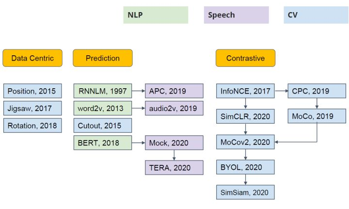
# 2.2. MAE（Masked Autoencoders）
论文标题：
Masked Autoencoders Are Scalable Vision Learners
论文地址：
https://arxiv.org/abs/2111.06377
代码地址：
https://github.com/facebookresearch/mae
论文动机：
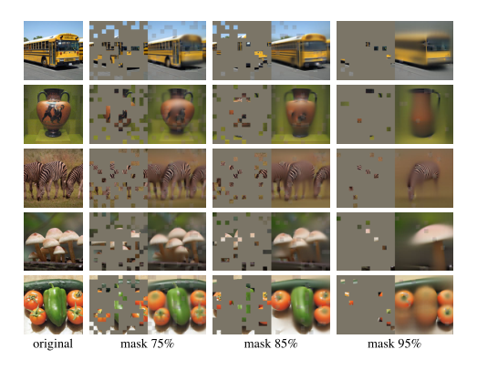
随着 BERT 的出现，Mask Language Modeling（MLM）的自监督学习方法逐渐进入人们的视野，这一方法在 NLP 领域中得到了广泛的应用。受到 MLM 的启发，一些工作也尝试在图像上进行 Mask Modeling（即，mask 图片的部分区域，然后对区域的内容进行重建），并且也取得了不错的效果。但目前的方法通常都采用对称的 encoder 和 decoder 结构，在 encoder 中，mask token 也需要消耗大量的计算，因此作者提出了一个非对称 encoder-decoder 的结构——masked autoencoders（MAE）。
MAE 方法很简单：mask 输入图像的随机 patch，并重建缺失的像素（上图展示了不同 mask 比率的重建结果）。它基于两个核心设计。首先，作者开发了一种非对称编码器-解码器结构，其中的编码器仅对可见的 patch 子集（不带 mask token）进行操作，而轻量级解码器则从潜在表示和 mask token 重建原始图像。其次，作者发现对输入图像的高比例（例如 75%）进行 mask 会产生一项困难且有意义的自监督任务。将这两种设计结合起来，能够高效地训练大型模型：加快训练速度（3 倍或更多）并提高精度。
方法介绍：
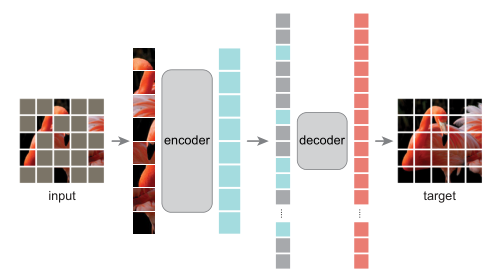
MAE 的结构如上图所示，与所有自动编码器一样，MAE 有一个编码器，将观察到的信号映射到潜在表示，还有一个解码器，从潜在表示重建原始信号。与经典的自动编码器不同，作者采用了一种非对称设计，允许编码器仅对部分观察信号（无mask token）进行操作，并采用一种轻量级解码器，从潜在表示和 mask token 重建完整信号。
具体来说，作者首先将图像划分为规则的非重叠 patch。然后，对一个子集的 patch 进行采样，并移除其余的 patch。然后将这些剩余的 patch 送入到编码器中，编码器是一个标准的 ViT 结构，由于编码器只处理很少一部分的 patch，因此可以用很少的计算和显存来训练非常大的编码器。编码器输出 token 后，作者在 mask 的位置加入了可学习的向量，组成完整的全套 token。
此外，作者向这个完整集合中的所有 token 添加位置嵌入；如果没有这一点，mask token 将没有关于其在图像中位置的信息。MAE 解码器仅在预训练期间用于执行图像重建任务（仅编码器用于生成用于识别的图像表示）。因此，可以以独立于编码器设计的方式灵活地设计解码器架构。作者用比编码器更窄、更浅的解码器进行实验。使用这种非对称设计，全套 token 仅由轻量级解码器处理，这大大减少了预训练时间。
# 工作介绍
# 3.1 图像MAE
3.1.1 MixMIM
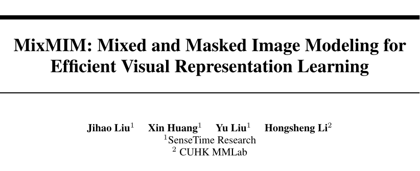
论文标题：
MixMIM: Mixed and Masked Image Modeling for Efficient Visual Representation Learning
论文地址：
https://arxiv.org/abs/2205.13137
论文动机：
现有 MIM 方法通常使用特殊符号 [MASK] 替换部分输入 token，并旨在恢复原始图像块。然而，使用 [MASK] 符号会导致两个问题。一方面，预训练中使用的 [MASK] 符号从未出现在微调阶段，导致预训练微调不一致。另一方面，预训练网络在处理非信息性 [MASK] 符号时浪费了大量计算，使得预训练效率低下。当使用较大的掩蔽比时，这些问题变得更加严重。
虽然 MAE 不存在上述问题，因为它丢弃了 mask token，并且只在轻量级解码器中使用了 [MASK] 符号。此外，目前 MAE 只适用于标准的 ViT 架构，如何使用 MAE 有效地预训练具有局部域操作的层次 ViT 架构，例如 Swin Transformer，仍然是一个问题。
方法介绍：
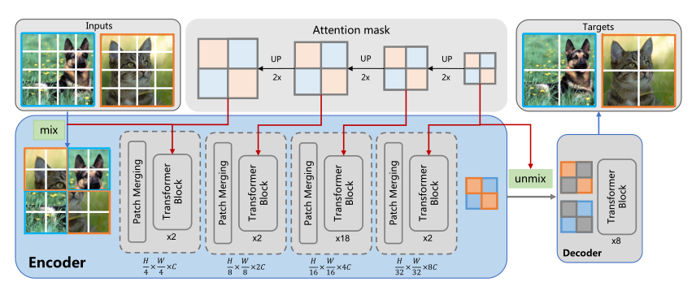
为了解决上面的问题，作者提出了 MixMIM，该结构吸收了 BEiT 和 MAE 的优点。如上图所示，给定训练集中的两幅随机图像，MixMIM 创建了一幅以随机混合 mask 为输入的混合图像，并训练一个层次 ViT 来重建两幅原始图像以学习视觉表示。
由于作者在 encoder 中没有采用 mask token，因此大大缩短了预训练和微调之间的 gap，也消除了处理 mask token 所需要的时间，提高了计算效率。编码器在进行 attention 计算时，作者用了 attention mask，阻断了跨图片 token 之间的交互。在解码阶段，作者通过 attention mask 分别去除图像的 token，并进行图像重建。
3.1.2 Uniform Masking
论文标题：
Uniform Masking: Enabling MAE Pre-training for Pyramid-based Vision Transformers with Locality
论文地址：
https://arxiv.org/abs/2205.10063
代码地址：
https://github.com/implus/UM-MAE
论文动机：
MAE 中最有影响力的设计之一是非对称编码器-解码器体系结构。与接收整个 patch token 序列的解码器部分不同，编码器部分仅将可见图像 patch（通常仅占总 patch 的 25%）作为输入。有趣的是，这种设计不仅显著降低了预训练的复杂性，而且还获得了优异的微调性能。
然而，非对称结构的成功应用依赖于 Vanilla Vision Transformer（ViT）的“全局”特性，其自注意机制可以对离散图像块的任意子集进行推理。虽然目前金字塔结构的 ViT 通过引入局部窗口操作，取得了非常好的结果，但 MAE 并不能在金字塔结构的 ViT 上进行应用。
因为每个局部窗口中可见元素的数量通常不相等，这妨碍了基于窗口的操作的有效并行计算。为了成功地对具有局部性的基于金字塔的 VIT 进行 MAE 预训练（即采用有效的不对称结构），作者提出了包含均匀采样（US）和二次掩蔽（SM）步骤的 Uniform Masking（UM）策略。
方法介绍：
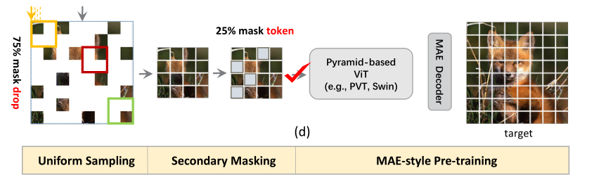
本文的 Uniform Masking（UM）策略如上图所示，主要分为两个步骤：第一步为均匀采样（US），使用均匀约束对 25% 的可见图像 patch 进行采样，这样，每个窗口将会留下 25% 的 token。与 MAE 中采用的随机采样相比，均匀采样（US）对均匀分布在 2D 空间上的图像块进行采样，使其与具有代表性的基于金字塔的 VIT 兼容。然而，通过相邻的低级别图像统计信息为像素重建提供更简单的方式，US 潜在地降低自监督任务的挑战性。
这已经在 MAE 中得到证明。为了解决这一问题，作者进一步提出了二次掩蔽（SM）策略，该策略为在第一步均匀采样后的特征图上进行随机 mask。与完全丢弃 mask token 的均匀采样阶段不同，SM 通过使用共享 mask token 来保持 mask patch，以确保基于金字塔的 VIT 与位置的兼容性。通过随机 mask token，大大提高了自监督任务的难度，从而提供了更好的自监督效果。
3.1.3 HiViT
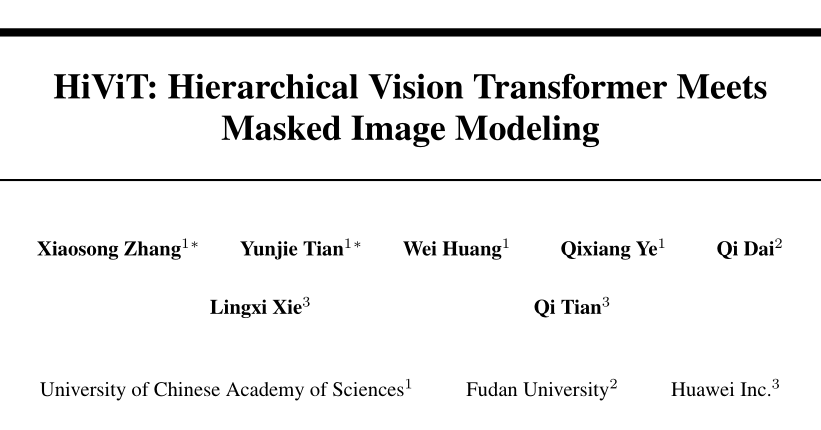
论文标题：
HiViT: Hierarchical Vision Transformer Meets Masked Image Modeling
论文地址：
https://arxiv.org/abs/2205.14949
论文动机：
最近，掩蔽图像建模（MIM）为视觉 Transformer 的自监督预训练提供了一种新的方法。高效实现的一个关键思想是在整个目标网络（编码器）中丢弃掩蔽图像 patch（或 token），这要求编码器是普通视觉 Transformer（例如 ViT）。但是分层视觉 Transformer（例如 Swin Transformer）在形成视觉输入方面具有潜在更好的特性。在本文中，作者将分层视觉 Transformer 的操作分成了三种类型：“单元内操作”、“全局单元间操作”和“局部单元间操作”。
标准 Transformer 包含其中的两种操作：单元内操作”（即 patch embedding、LayerNorm、MLP）和“全局单元内操作”（即全局自注意力）。因此可以丢弃单元的空间坐标，并且可以将单元序列化以进行高效计算。但是层次视觉 Transformer 还包括局部单元间操作（如，shifting-window self-attentions, patch merging），这需要基于单元的空间坐标进行额外判断，并妨碍序列化以及移除 mask 单元。
方法介绍：
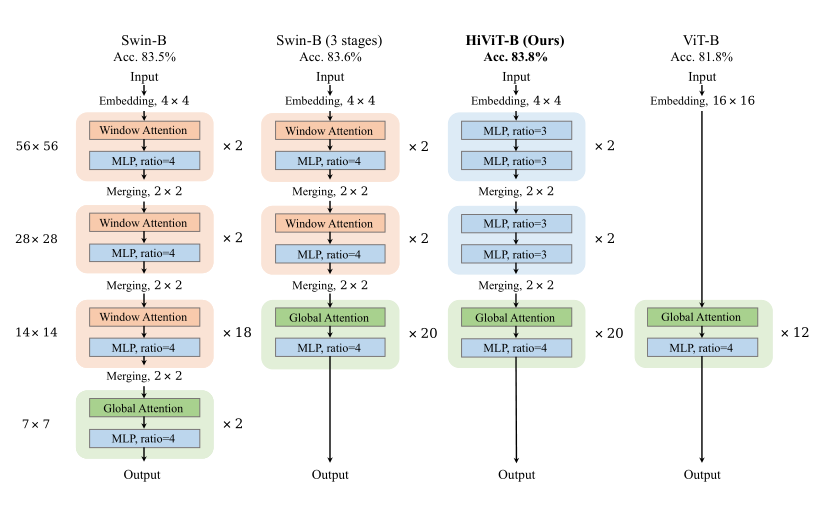
作者观察到，“局部单元间操作”对识别性能的贡献不大——真正有意义的是层次设计（即多尺度特征图）。因此，为了使分层视觉 Transformer 能够适合 MAE 的训练，作者删除了“局部单元间操作”，从而形成了一个简单的分层视觉 Transformer。在层次视觉 Transformer 中，通常有四个不同分辨率的阶段，其中第三阶段的层数最多，称之为主阶段。作者移除了 Swin Transformer 的最后一个阶段，并去掉了所有局部单元间窗口注意力，只在主阶段保留 token 之间的全局注意力。
在实现中，作者将最后一个阶段合并到主阶段，以保持模型的 FLOPs 不变。早期阶段的局部窗口注意力被具有相同 FLOPs 的 MLP 所取代。通过这些修改，作者删除了层次视觉 Transformer 中所有冗余的“局部单元间操作”。本文提出的 HiViT 结构如上图所示。由于去除了局部窗口的操作，HiViT 就能够进行 MAE 的预训练。
# 3.2. 视频MAE
VideoMAE
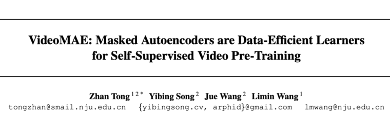
论文标题：
VideoMAE: Masked Autoencoders are Data-Efficient Learners for Self-Supervised Video Pre-Training
论文地址：
https://arxiv.org/abs/2203.12602
代码地址：
https://github.com/MCG-NJU/VideoMAE
论文动机：
随着 Mask Modeling 在图像和文本数据上的成功，一些研究人员也开始在视频数据上进行 MAE 的自监督预训练。本文的大致策略和图片 MAE 类似，但是作者通过将 MAE 运用在视频数据上得到了几个重要的发现：1）极高的掩蔽率（即 90%-95%）仍然可以产生良好的 VideoMAE 性能。2） VideoMAE 在非常小的数据集上取得了非常好的结果，而无需使用任何额外数据。3） 在 VideoMAE 中，数据质量比数据量更重要。
方法介绍：
在本文中，作者提出了一种新的自监督视频预训练方法——VideoMAE，其 Pipeline 如上图所示。相比于图片 MAE，视频 MAE 在时间维度上可能存在更高的冗余，由于视频的语义在时间维度上变化缓慢，相邻帧的内容通常非常相似，因此如果不采用特殊的 mask 策略，模型可能很容易从相邻帧学到重建的知识，降低了自监督训练任务的难度。
因此，对于时间冗余，作者采用了非常高的 mask ratio 从视频中删除时间立方体。由于采用了非对称的编码器-解码器结构，极高的 mask ratio 也大大降低了预训练的计算成本。此外，为了考虑时间的相关性，作者采用了 tube masking strategy，以减少重建过程中的信息泄露风险。
# 3.3 多模态MAE
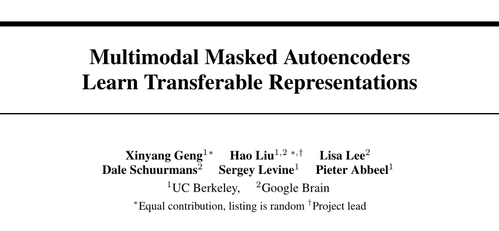
论文标题：
Multimodal Masked Autoencoders Learn Transferable Representations
论文地址：
https://arxiv.org/abs/2205.14204
论文动机：
目前多模态数据的自监督学习主要是基于对比学习的方法，如 CLIP。但是对比学习方法会根据使用的数据增加引入抽样偏差，这会降低下游任务的性能。此外，这些方法仅限于成对的图像文本数据，无法利用广泛可用的未成对数据。随着 Mask Modeling 在 CV 和 NLP 领域的广泛应用，作者尝试在多模态数据上进行 Mask Modeling 来自监督学习，进而提出了多模态掩蔽自动编码器（M3AE），它通过 mask token 预测来学习视觉和语言数据的统一编码器。
方法介绍：
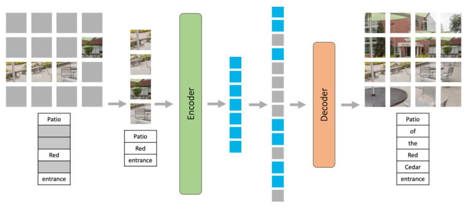
本文提出的 M3AE 结构如上图所示。M3AE 的第一步是将语言和图像组合为一个序列，对于文本，作者将其转换为了一系列离散 token；对于图像，作者和 ViT 一样将其转换为了一系列 patch token。然后，作者从均匀分布中采样了 s 个随机子集，并移除其他子集。
作者对文本 token 和图像 token 都应用了高掩蔽率，以消除信息冗余，并使任务变得非常困难，无法通过从可见的相邻 token 进行外推轻松解决。
与 MAE 一样，M3A
E 由编码器和解码器组成，编码器只接受未掩蔽语言 token 和图像 token 作为输入。
两个模态都加了相应的位置编码。
此外，为了区分模态，作者还添加了模态特定的嵌入。
可学习的 CLS 嵌入被预先设置到序列的开头。
然后，通过编码器中一系列 Transformer 块对组合语言和图像嵌入进行处理，以获得最终的编码表示。将一系列可学习的 token 加入到编码器的输出中，得到完整的 token 集合，并向完整的 token 集合中添加位置嵌入。完成的 token 集合通过解码器处理之后，作者采用了两个线性投影输出头来计算重建，从而进行自监督任务。
# 总结
目前，自监督学习是深度学习领域中一个重要的研究话题，它能来挖掘数据自身的表征特性作为监督信息，来提升模型的特征提取能力，大大降低模型对于标注数据的依赖性，因此减少了数据标注的成本以及人工标注数据引入的偏置。MAE 属于自监督学习方法的一种，由于其非对称的编码器-解码器结构，大大提升了模型的训练效率，这一工作也启发了后续大量基于 mask modeling 的科研工作，是一项里程碑式的工作。